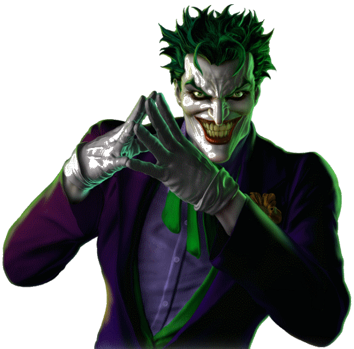

The below image is a transparent png. It is wrapped inside a 'div' whose background you can select from the dropdown.
Selecting a particular color as background will generate an image, with that color set as background, which you can then right click and save as image.

Select Background of the div:
Apply Background
- Red
- Blue
- Yellow
- Green
- Reset